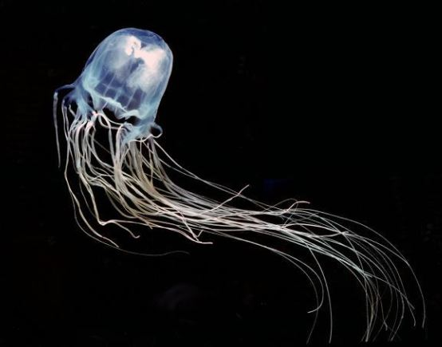
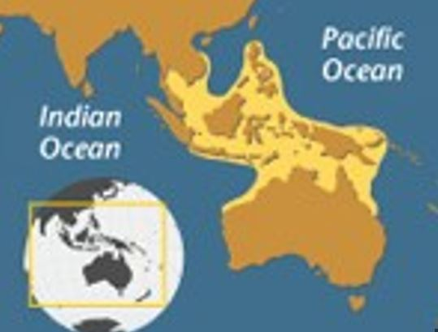

AVISPA DE MAR
 Es translúcida y brilla en la oscuridad. Puede llegar a alcanzar el tamaño de un balón de baloncesto, con numerosos tentáculos cada uno con 5 mil millones de células urticantes (cnidocitos) que pueden inyectar un letal veneno. Cuando los tentáculos entran en contacto con la piel es extremadamente doloroso, arde, y se sienten pequeños calambres que impiden tener un movimiento normal en la zona de contacto. Al momento del primer contacto el dolor es particularmente intenso con una duración promedio de 12 minutos, sin embargo este puede persistir hasta por 48 minutos o más. El veneno se mete directamente al torrente sanguíneo y, dependiendo del peso de la persona y la cantidad de veneno incluido por la avispa de mar, puede causar shock y paro cardíaco.
| Tamaño | La avispa de mar es una gran medusa y de ella salen 70 tentáculos de aproximadamente 3 metros de largo. |
| Alimentación | Pues se alimenta de pequeños animales marinos, como camarones, peces y langostinos, y plancton. Para capturar a sus presas se sirven de sus tentáculos urticantes. |
| Distribución geográfica |  |